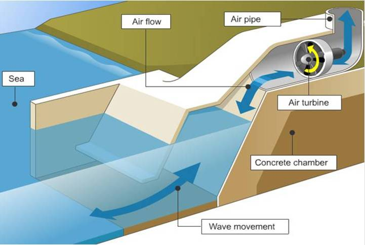

La energía Undimotriz, es aquella que se aprovecha del movimiento de las olas para la generación de energía eléctrica. En sí, es la energía que se obtiene de la energía mecánica y potencial del movimiento de las olas, mientras que la energía Mareomotriz lo hace a través de las mareas. Este tipo de energía marina está menos desarrollado que otros como la energía mareomotriz o maremotérmica, pero su potencial es igualmente alto, ya que las olas se generan continuamente en todos los mares y costas del planeta.
Su principal uso es para la generación de energía eléctrica, donde diversidad de países, con zonas costeras, se aprovechan de esta fuente de energía renovable e inagotable como alternativa ante los combustibles fósiles beneficiando así el medio ambiente y aportar a un desarrollo sostenible.
Las siguientes características se basan en porqué la energía undimotriz funciona como solución para un desarrollo sostenible:
Es una cueva natural con un orificio de soplado o una cámara artificial con un generador de turbina eólica sobre la superficie del agua.
Se suelen colocar en zonas donde la energía de la ola es muy fuerte, en rompeolas, defensas costeras. Al llegar la ola presiona el aire de las cámaras y éste asciende pasando por las turbinas y haciéndolas girar. Cuando la ola se retira, el aire es succionado y también pasa por la turbina. En ambos casos produce un movimiento giratorio de cada turbina, siempre en el mismo sentido, que se aprovecha para mover los generadores y producir electricidad. Está formada por dos turbinas de contra rotación asociadas a un generador. El agua de mar nunca entra en contacto con los elementos electromecánicos de la instalación.
Está formado por cilindros articulados y parcialmente sumergidos. El desnivel entre los distintos puntos de la máquina hace girar bisagras y puntos de quiebre. Justo ahí es donde se encuentran unos sistemas hidráulicos que, al ser accionados, bombean fluidos para hacer girar unos generadores eléctricos. Se calcula que las necesidades energéticas de unos 20.000 hogares europeos se verían cubiertas con sólo 30 sistemas como éste.